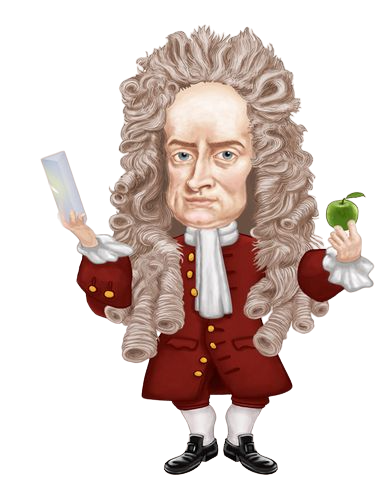
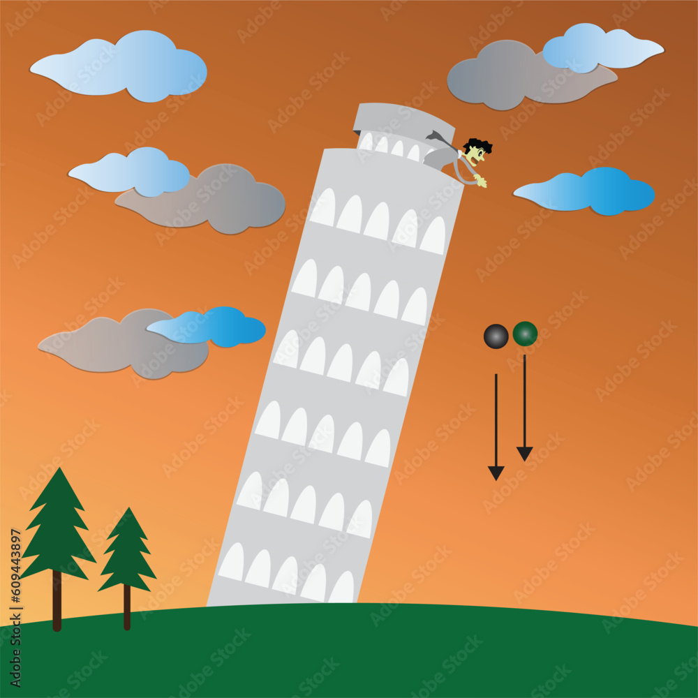
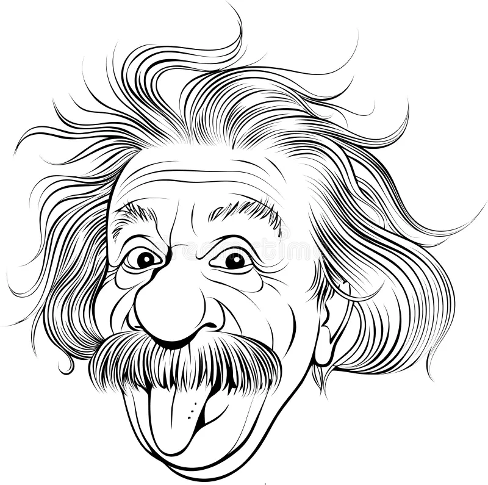
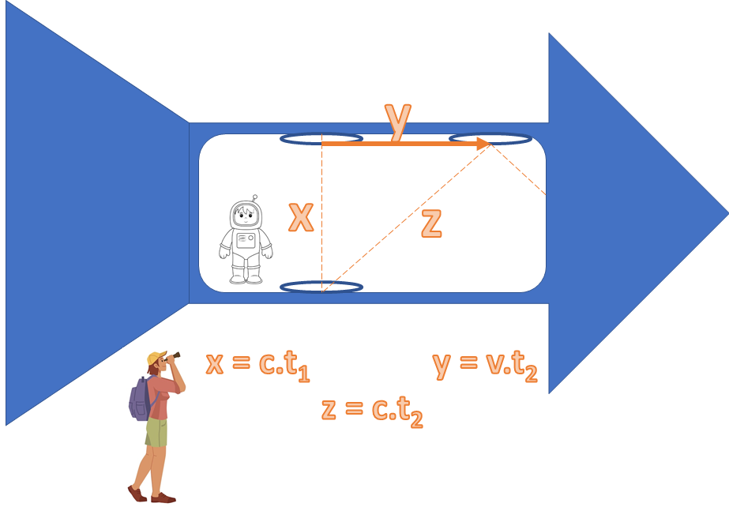
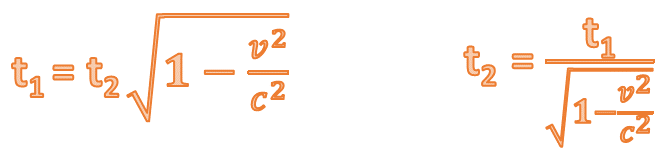
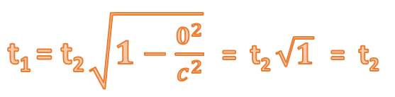
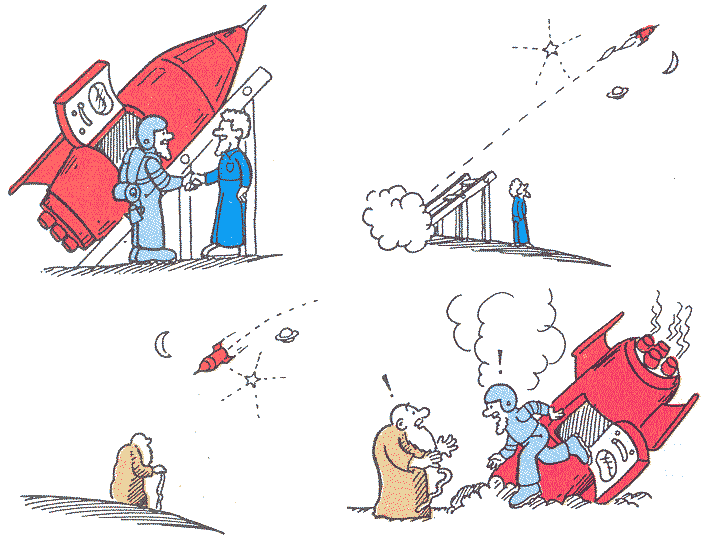

Bem vindo ao curiosidades da Física!
Você já ouviu falar em dualidade Onda-Partícula?
Você já se perguntou o que é luz?
Como algo aparentemente tão simples e familiar pode ser objeto de um dos debates mais
fascinantes na história da ciência?
A resposta está na dualidade intrigante que envolve a natureza da luz:
será ela uma onda fluindo e se espalhando pelo espaço, ou uma série de minúsculas
partículas viajando em linha reta?
Vamos mergulhar nesse intrigante debate entre Christiann Huygens e Isaac
Newton, para desvendar as bases de seus pontos de vista e as implicações que essas
teorias tiveram no nosso entendimento da luz.
Prepare-se para uma jornada pelo coração da dualidade onda-partícula na natureza da luz!

Huygens: (Com entusiasmo) Senhor Newton, é uma honra poder discutir com um intelecto tão ilustre como o seu. Permita-me iniciar: a luz, caro amigo, é uma onda, uma perturbação que se propaga através do espaço. Isso é evidenciado pela difração e interferência observadas em inúmeros experimentos.
Newton: (Sorrindo) Senhor Huygens, o prazer é meu. No entanto, devo discordar. A luz é composta de partículas minúsculas, como bem demonstra o experimento com o prisma, onde a luz branca é decomposta em suas cores constituintes.
Huygens: (Levantando-se) Por favor, considere o experimento das duas fendas. Ao deixar a luz passar por aberturas estreitas, observamos padrões de interferência característicos de ondas. Como explicar isso com uma visão corpuscular?
Newton: (Ponderando) De fato, esse experimento é intrigante. No entanto, o fenômeno pode ser explicado se considerarmos que as partículas de luz se comportam de maneira probabilística, concentrando-se em certas áreas.
Huygens: (Retomando a palavra) E quanto à difração? Quando a luz encontra uma borda ou uma fenda, ela se curva em torno dela, comportamento típico de uma onda. Isso não é algo que possa ser facilmente reconciliado com uma abordagem corpuscular.
Newton: Newton: (Refletindo) Concordo que a difração é um fenômeno intrigante. No entanto, talvez possamos conceber partículas de luz que, em determinadas circunstâncias, exibem esse comportamento aparentemente ondulatório.
Huygens: (Sorrindo) Compreendo seu ponto de vista, senhor Newton. No entanto, devo lembrar que as leis de refração e reflexão podem ser elegantemente derivadas a partir do princípio de Huygens, reforçando a perspectiva ondulatória.
Newton: (Respeitosamente) Sem dúvida, senhor Huygens, suas contribuições são notáveis. No entanto, a teoria corpuscular também oferece explicações robustas para esses fenômenos.
Niels Bohr:
É fascinante observar como o debate entre Huygens e Newton moldou nosso entendimento da luz.
De fato, Huygens trouxe à tona a elegância das ondas, destacando a difração e a interferência.
Sua teoria certamente possui uma beleza intrínseca, uma visão unificada do fenômeno luminoso.
No entanto, a perspectiva de Newton ganha força com os experimentos cruciais de Planck e Einstein
revelando que a luz também possui uma faceta corpuscular inegável, com evidências palpáveis e
inquestionáveis.
(Mantendo um tom ponderado) Chegamos, assim, ao cerne do paradoxo: a dualidade onda-partícula.
A luz não pode ser confinada a uma única interpretação. É uma entidade que se revela em
múltiplas facetas, dependendo do contexto experimental. Este é o princípio da complementaridade, que
postula que tanto o caráter ondulatório quanto o corpuscular são intrínsecos à natureza da luz.
(Concluindo com um sorriso) Somente ao abraçar essa dualidade podemos apreciar plenamente a
riqueza e complexidade do universo que nos cerca. É um convite à contemplação, à aceitação da
ambiguidade e, acima de tudo, à busca contínua pelo entendimento mais profundo do
que nos envolve.
Quem chega Primeiro?
A compreensão da queda livre começou a ser moldada nos tempos de Galileu Galilei, um dos pioneiros da física moderna. Galileu percebeu que todos os objetos, independentemente de sua massa, caem com a mesma aceleração na ausência de resistência do ar. Suas observações pavimentaram o caminho para uma compreensão mais profunda da mecânica.
Galileu e a Lei da Queda dos Corpos: Galileu foi o primeiro a realizar experimentos sistemáticos sobre a queda dos corpos. Conta-se uma história (não se sabe se é verídica), que ele subiu na Torre Inclinada de Pisa e deixou cair objetos de diferentes massas e formatos, constatando que todos chegavam ao solo ao mesmo tempo, desde que a resistência do ar fosse desconsiderada. Essa observação desafiou as intuições da época, que acreditavam que objetos mais pesados deveriam cair mais rapidamente. Galileu formulou a Lei da Queda dos Corpos, que estabelece que, na ausência de resistência do ar, todos os objetos caem com a mesma aceleração devida à gravidade.
Contribuição de Newton: As descobertas de Galileu foram posteriormente consolidadas e ampliadas por Isaac Newton com o desenvolvimento das três leis fundamentais do movimento e a teoria da gravitação universal. A Segunda Lei de Newton (F=m⋅a), em particular, desempenha um papel crucial na compreensão da queda livre, relacionando a força resultante com a aceleração de um objeto. Na queda-livre, quando desconsideramos a resistência do ar, a única força atuante sobre o objeto é a gravidade, que gera uma aceleração constante de simplifica-se para a equação p=m⋅g, onde g é a aceleração devida à gravidade. aproximadamente 9,8 m/s2 em direção ao centro da Terra. Portanto, a Segunda Lei de Newton
Desafiando a intuição
Aqui surge um fascinante
questionamento: se retirarmos completamente a resistência do ar, quem chegará primeiro ao chão,
uma bola de boliche
ou uma pena?
Nossa intuição muitas vezes nos diz que a bola de boliche, por ser mais pesada,
deveria atingir o solo primeiro. No entanto, isso não é o que a física nos revela.
Agora, levando em conta o raciocínio de Galileu e Newton, quem você acredita que chegaria primeiro
ao solo:
a bola de boliche ou a pena?
É um dilema intrigante que ilustra a beleza e a
surpresa da física que merece ser visto com os próprios olhos.
Não acredita? Então veja o vídeo abaixo.
Viagem no tempo
Quem nunca sonhou em fazer uma viagem no tempo?
Parece coisa de filme, mas a Física nos reserva umas surpresas bem interessantes sobre isso, tudo graças à Teoria da Relatividade de Einstein.
Teoria da Relatividade: Muda Tudo o que Sabemos sobre o Tempo. Acredite ou não, o tempo não é igual para todo mundo! Einstein mostrou que ele pode se esticar ou encolher, dependendo de quão rápido você está se movendo ou de quanta gravidade está ao seu redor. É como se o tempo fosse uma gelatina que pode se esticar e se moldar.
Imagine um astronauta que está viajando pelo espaço em uma nave. Dentro da nave existe um relógio de luz que emite um foton que é refletido por um espelho. O tempo é marcado a cada ida e volta do foton entre os espelhos. Na figura ao lado, a linha tracejada laranja representa a trajetória que o foton faz de um espelho a outro. Assim, na visão do nosso astronauta a trajetória que ele encherga do foton é uma linha reta na vertical.
A distância entre os espelhos é dada pelo produto da velocidade pelo tempo (d = v.t). Como o Foton viaja na velocidade da Luz (c) a distância entre os espelhos será dada por: d = c.t1
O nosso astronauta será o observador 1, assim, seu tempo será identificado com t1.
Imagine que na Terra, tem uma pessoa com super binóculos que lhe permite observar a nave em movimento. Diferentemente do Astronauta, nosso observador 2 irá enchegar uma trajetória diferente do foton. Como a nave está em movimento, a trajetória do Foton para o observador 2 será uma linha reta na diagonal. O tempo do observador 2 será dado por T2. A distância entre os espelhos, nesse caso, será dada por: d = c.t2. Porém, aqui há outro aspecto que precisa ser observado. Perceba que do instante em que o Foton sai do espelho inferior e voltar para ele, a posição do espelho muda em relação ao observador 2 (para o astronauto isso não acontece), pois a nave está em movimento. A distância da posição incial do espelho inferior para a posição final será dada por: d = v.t2. Onde a velocidade (v) é a velocidade da nave. O tempo, nesse caso, é do observador 2 uma vez que somente ele observa essa mudança de posição.
Por fim, a figura ao lado representa as duas situações ao mesmo tempo. Onde a trajetória X é o movimento do Foton observado pelo Astronauta, a trajetória Z é o movimento do Foton observado pela pessoa na Terra e a trajetória Y é o movimento da nave também observado pela pessoa na Terra.
OK!!! Entendi que cada observador enchergar uma trajetória diferente para o mesmo Foton. Mas o que tem isso com a viagem no tempo??? E pra quê essas fórmulas?!
Se olhar com atenção para a última figura, você verá que a junção das trajetórias formam um triâgulo retângulo, ou seja, um dos vértices (junção das arrestas) formam um ângulo de 90º graus.
Vocês se lembram do teorema de Pitágoras??? CLIQUE!!! ▼
Agora, vamos analisar as esquações:
OBS.: As equações são idênticas. A única diferença é que na primeira isolamos t1 para encontrar o tempo do Astronauta e na segunda, isolamos t2 para econtrar o tempo do observador na Terra.
Repare que, quando houver movimento (velocidade), o tempo de quem estiver em movimento será menor em relação a alguém que estiver parado. Uma vez que, estando os dois parados, os tempos serão exatamente iguais.
Para v = 0, temos,
OK! Entendi que o tempo é diferente para pessoas/objetos que estão em movimento.
Mas porque não sentimos essa diferença no dia-a-dia?
De fato, Einstein está certo. Veja os resultados abaixo para velocidades do nosso dia-a-dia.
Lembrando que a velocidade da luz é de aproximadamente 300.000 km/s ou 1.000.000.000 km/h.
Perceba que, apesar dos resultados serem diferentes, ambos são praticamente 1. Portanto, novamente, os tempos de t1 e t2 são praticamente iguais.
As coisas começam a ficar interessantes para velocidades próximas da luz.
E é aqui que a viagem no tempo se torna possível.
O PARADOXO DOS GÊMEOS
Imagine dois irmãos gêmeos. Um deles é astronauta e parte para o espaço num fogute a uma velocidade próxima à da luz. Quando o gêmeo astronauta retorna, o irmão na Terra envelheceu mais do que o viajante espacial.
Como vimos, o tempo da pessoa que está em movimento passa mais devagar. Nesse caso, o tempo do irmão que estava no foguete ,viajando a uma velocidade próxima à da luz, passou bem mais devagar que o tempo do irmão que ficou na terra. Para o astronauta, foi como se tivesse viajado no tempo, ou seja, para o futuro.
Sinta-se à vontade para experimentar a simulação de dilatação do tempo em nossa Calculadora Temporal. Basta inserir o tempo que o viajante passará fora, e descubra quanto tempo terá transcorrido para quem está aqui na Terra. Divirta-se!
Calculadora Temporal
Selecione a unidade de tempo desejada:
Por quanto tempo o viajante ficará em movimento?
Qual a velocidade do viajante?
km/sEnquanto o Astronauta viaja por:
00
Aqui na Terra terão se passado:00